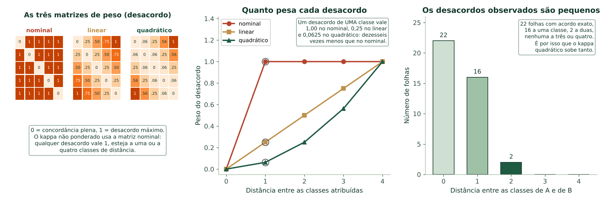
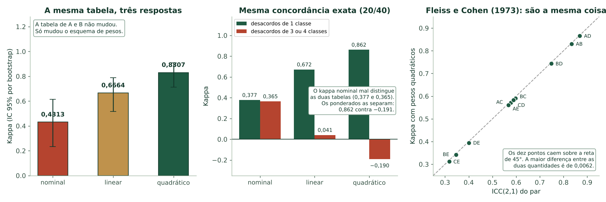

Kappa ponderado
Estende o kappa de Cohen a escalas ordinais, atribuindo crédito parcial aos desacordos entre categorias vizinhas.
Comece por aqui
Quando a escala é ordinal, o kappa de Cohen desperdiça informação: ele trata "um avaliador disse 3 e o outro disse 4" exatamente como "um disse 1 e o outro disse 5". O kappa ponderado corrige isso atribuindo um peso a cada tipo de desacordo, de modo que errar por pouco custe menos que errar por muito.
Na tabela dos avaliadores A e B desta ficha, o kappa vale 0,431 sem pesos, 0,666 com pesos lineares e 0,831 com pesos quadráticos. A tabela não mudou: mudou só o que se decidiu que conta como desacordo. Reportar "kappa = 0,83" sem dizer qual esquema de pesos foi usado é omitir a metade da informação.
O que é o kappa ponderado
Em vez de contar apenas a diagonal, atribui-se a cada célula \((i,j)\) um peso de desacordo \(w_{ij}\), com \(w_{ii}=0\) e \(w_{ij}=1\) no desacordo máximo. A concordância observada passa a ser \(1-\sum w_{ij}p_{ij}\), e a esperada, \(1-\sum w_{ij}p_{i\cdot}p_{\cdot j}\). A fórmula do kappa é a mesma.

A literatura usa tanto pesos de desacordo (0 na diagonal, 1 no pior caso) quanto pesos de concordância (1 na diagonal, 0 no pior caso). São complementares: \(w^{\text{conc}}=1-w^{\text{desac}}\). O R, em irr::kappa2() e vcd::Kappa(), usa pesos de desacordo; o AC2 de Gwet usa pesos de concordância. Trocar um pelo outro produz um resultado sem sentido, e é um erro comum em implementações próprias.
Pressupostos e como verificá-los
| Pressuposto | Por que importa | Como verificar |
|---|---|---|
| Escala ORDINAL | Os pesos pressupõem uma ordem nas categorias. | Se não houver ordem, use o kappa não ponderado. |
| Dois avaliadores | O coeficiente é definido para um par. | Para mais, Fleiss ou AC2. |
| As mesmas categorias para os dois | A tabela precisa ser quadrada. | Confira os níveis. |
| Unidades independentes | O erro-padrão pressupõe isso. | Delineamento. |
| Esquema de pesos escolhido a priori | Escolher depois de ver qual dá o maior valor invalida o resultado. | Protocolo. |
| Pesos quadráticos: escala tratável como intervalar | Eles equivalem a supor distâncias iguais entre classes vizinhas. | Pela identidade de Fleiss e Cohen, equivalem ao ICC. |
| Categorias sem lacunas | Categorias nunca usadas distorcem as marginais. | Tabela de frequências por categoria. |
Errar por duas classes é duas vezes pior que errar por uma, ou quatro vezes pior? A primeira resposta leva ao peso linear, a segunda ao quadrático. Não há resposta estatística: ela vem do problema. Em diagnóstico clínico, em que confundir "leve" com "grave" é muito pior que confundir "leve" com "moderado", o quadrático costuma ser defensável. Em uma escala de notas de 1 a 5, em que cada degrau tem o mesmo peso administrativo, o linear é mais fiel.
Formulação e cálculo
Em que:
- \(w_{ij}\)
- peso de desacordo da célula \((i,j)\); vale 0 na diagonal
- \(p_{ij}\)
- proporção observada na célula \((i,j)\)
- \(p_{i\cdot},p_{\cdot j}\)
- marginais
- \(k\)
- número de categorias ordenadas
As três matrizes de peso, para k = 5
| Distância | Nominal | Linear | Quadrático | Folhas no exemplo |
|---|---|---|---|---|
| 0 (acordo exato) | 0,0000 | 0,0000 | 0,0000 | 22 |
| 1 classe | 1,0000 | 0,2500 | 0,0625 | 16 |
| 2 classes | 1,0000 | 0,5000 | 0,2500 | 2 |
| 3 classes | 1,0000 | 0,7500 | 0,5625 | 0 |
| 4 classes | 1,0000 | 1,0000 | 1,0000 | 0 |
A tabela 5 × 5 tem 22 folhas na diagonal, 16 a uma classe de distância e 2 a duas classes. Com pesos quadráticos:
A concordância esperada, calculada sobre o produto das marginais, dá \(p_e^{(w)}=0{,}7785\). Logo
| Esquema | po ponderada | pe ponderada | Kappa | EP (bootstrap) | IC 95% |
|---|---|---|---|---|---|
| Nominal | 0,5500 | 0,2088 | 0,4313 | 0,0984 | [0,2314; 0,6163] |
| Linear | 0,8750 | 0,6253 | 0,6664 | 0,0700 | [0,5134; 0,7855] |
| Quadrático | 0,9625 | 0,7785 | 0,8307 | 0,0508 | [0,7100; 0,9076] |
Note que o intervalo também encolhe à medida que os pesos ficam mais generosos: a estimativa não só sobe como parece mais precisa. Isso é um artefato da escala, não um ganho de informação.
A identidade de Fleiss e Cohen
Fleiss e Cohen (1973) mostraram que o kappa com pesos quadráticos é essencialmente o coeficiente de correlação intraclasse calculado sobre os códigos numéricos das categorias. Nos dados desta ficha:
A diferença vem apenas da convenção de usar \(n\) ou \(n-1\) no denominador das variâncias, e desaparece com \(n\) grande. A consequência prática é importante: escolher o peso quadrático é escolher tratar a escala ordinal como se fosse intervalar. Quem não aceita essa suposição deve preferir o peso linear.
Propriedades
- Com pesos nominais, reduz-se exatamente ao kappa de Cohen.
- Com pesos quadráticos, é numericamente equivalente ao ICC(2,1) sobre os códigos das categorias.
- Para uma mesma tabela, vale sempre \(\kappa_{\text{nom}}\leq\kappa_{\text{lin}}\leq\kappa_{\text{quad}}\) quando os desacordos observados são predominantemente pequenos — mas a ordem pode se inverter quando são grandes.
- É invariante a transformações monótonas que preservem as distâncias entre as categorias.
- Pode ser negativo, como o kappa não ponderado.
- O peso quadrático é o único da família para o qual existe a identidade com o ICC; os demais não têm essa interpretação.
- O erro-padrão assintótico existe em forma fechada (Fleiss, Cohen e Everitt, 1969), mas o bootstrap sobre as unidades é mais simples e igualmente válido.
Como interpretar os resultados
| Elemento | O que informa | Cuidado |
|---|---|---|
| value com weight declarado | A estimativa. | Sem o esquema declarado, o número é ambíguo. |
| IC 95% | A precisão. | Encolhe com pesos mais generosos. |
| Distribuição das distâncias | Onde estão os desacordos. | É o diagnóstico mais informativo. |
| Diferença entre os três kappas | Se os desacordos são pequenos ou grandes. | Diferença grande = desacordos pequenos. |
| Kappa quadrático | Equivale ao ICC(2,1). | Pressupõe escala intervalar. |
| Ordem dos pares | Quais avaliadores concordam mais. | Pode mudar com o esquema de pesos. |
Nos dez pares desta ficha, a correlação de Spearman entre a ordenação pelo kappa nominal e pelo quadrático é 0,81 — alta, mas longe de 1. Oito dos dez pares trocam de posição. O caso mais claro é C–D, que sobe do oitavo para o quinto lugar porque os desacordos entre C e D são quase todos de uma classe; e C–E, que cai do sétimo para o décimo porque os desacordos ali são grandes. Seria errado dizer que o esquema de pesos é indiferente à conclusão sobre quem concorda com quem.
Como executar no R e em Python
Onde executar o código em Python
Não é preciso instalar nada: o Google Colab é um computador na nuvem, gratuito, que executa Python pelo navegador e já traz as bibliotecas usadas aqui (numpy, scipy e matplotlib).
No R, o argumento weight de irr::kappa2() aceita "unweighted", "equal" (pesos lineares) e "squared" (quadráticos), ou um vetor de pesos próprio. A função vcd::Kappa() devolve as versões não ponderada e ponderada de uma vez, com confint(). Atenção: no R os pesos são de desacordo. Para o intervalo, o bootstrap sobre as unidades é o caminho mais seguro, porque o erro-padrão assintótico é pouco confiável com n pequeno.
library(irr)
kappa2(dados[, c("A","B")], weight = "unweighted")
kappa2(dados[, c("A","B")], weight = "equal") # linear
kappa2(dados[, c("A","B")], weight = "squared") # quadrático
Exemplo de aplicação
Contexto dos dados
Os dados são fictícios e foram criados pelo autor: 40 folhas de cafeeiro avaliadas quanto à severidade de ferrugem por cinco avaliadores (A a E), em escala ordinal de 1 (ausente) a 5 (muito alta). O mesmo conjunto atravessa as seis fichas de concordância, o que permite ver como cada coeficiente responde à mesma estrutura de desacordo. Dois dos avaliadores foram construídos com defeitos distintos: o C classifica sistematicamente cerca de uma classe acima dos demais, e o E é o mais errático sem ser o mais severo. Esta ficha explora a parte ordinal da escala, que o kappa de Cohen ignora por construção.
Código em R
# Kappa ponderado: exemplo completo ----
# Pacotes: irr (kappa2 com pesos), vcd (Kappa), psych, DescTools
# install.packages(c("irr", "vcd", "psych"))
# Os mesmos dados da ficha do kappa de Cohen: 40 folhas, cinco avaliadores,
# severidade de ferrugem em escala ORDINAL de 1 a 5.
sev <- matrix(c(
3,3,4,3,4, 5,4,4,4,5, 4,4,5,3,5, 5,5,5,4,5, 5,5,5,4,3,
1,2,2,1,1, 2,2,3,2,4, 1,2,1,1,1, 3,3,4,3,4, 3,4,5,4,2,
4,3,4,3,4, 3,4,4,3,3, 1,1,1,1,1, 3,3,5,3,3, 2,3,2,2,1,
5,5,5,5,4, 5,5,4,3,5, 4,5,5,4,4, 2,2,5,2,2, 3,4,5,4,3,
4,4,4,4,1, 1,2,3,1,3, 3,3,3,3,3, 2,3,5,2,3, 2,1,2,2,2,
2,1,3,2,3, 3,3,4,3,1, 2,1,1,1,5, 3,2,4,5,4, 1,1,1,1,2,
4,5,5,4,4, 2,2,4,2,1, 1,1,4,1,3, 1,1,2,1,1, 3,3,3,2,3,
3,3,3,3,3, 3,5,4,3,2, 2,2,4,2,1, 4,2,5,4,4, 5,5,5,5,2),
ncol = 5, byrow = TRUE,
dimnames = list(NULL, c("A","B","C","D","E")))
tab <- table(A = factor(sev[,"A"], 1:5), B = factor(sev[,"B"], 1:5))
tab
sum(diag(tab)) # acordo exato
sum(tab[abs(row(tab) - col(tab)) == 1]) # desacordo de uma classe
# Os três kappas
library(irr)
kappa2(sev[, c("A","B")], weight = "unweighted")
kappa2(sev[, c("A","B")], weight = "equal") # pesos LINEARES
kappa2(sev[, c("A","B")], weight = "squared") # pesos QUADRÁTICOS
library(vcd)
Kappa(tab) # devolve as duas de uma vez
confint(Kappa(tab))
# As matrizes de peso, explicitamente (no R, pesos de DESACORDO)
k <- 5; i <- row(matrix(0, k, k)); j <- col(matrix(0, k, k))
w_nom <- 1 * (i != j)
w_lin <- abs(i - j)/(k - 1)
w_qua <- (i - j)^2/(k - 1)^2
round(w_lin, 4); round(w_qua, 4)
# A conta à mão, com pesos quadráticos
P <- prop.table(tab)
E <- outer(rowSums(P), colSums(P))
po <- 1 - sum(w_qua * P); pe <- 1 - sum(w_qua * E)
(po - pe)/(1 - pe)
# Intervalo de confiança por bootstrap das unidades
set.seed(3)
bs <- replicate(5000, {
idx <- sample(nrow(sev), replace = TRUE)
kappa2(sev[idx, c("A","B")], weight = "squared")$value
})
quantile(bs, c(0.025, 0.975)); sd(bs)
# A identidade de Fleiss e Cohen (1973):
# kappa quadrático = ICC(2,1) sobre os mesmos dados
library(irr)
icc(sev[, c("A","B")], model = "twoway", type = "agreement", unit = "single")
kappa2(sev[, c("A","B")], weight = "squared")$value
# As duas quantidades coincidem até a terceira casa decimal.
# Todos os pares, nos três esquemas
pares <- combn(colnames(sev), 2)
res <- t(apply(pares, 2, function(p) c(
nominal = kappa2(sev[, p], weight = "unweighted")$value,
linear = kappa2(sev[, p], weight = "equal")$value,
quadratico = kappa2(sev[, p], weight = "squared")$value)))
rownames(res) <- apply(pares, 2, paste, collapse = "-")
round(res, 4)
cor(res[, "nominal"], res[, "quadratico"], method = "spearman")
# Gráficos
library(vcd)
agreementplot(tab, main = "Concordância entre A e B",
weights = c(1, 0.75)) # crédito parcial ao desacordo de 1 classe
A mesma análise em Python, com os resultados
Cole o código em um notebook do Google Colab ↗ e execute com Shift+Enter. Os valores abaixo são a saída desse código.
# Bibliotecas: numpy e scipy (ambas já instaladas no Google Colab)
import numpy as np
from scipy import stats
# ===================================================================
# Dados fictícios, criados pelo autor, compartilhados pelas fichas de
# concordância: 40 folhas de cafeeiro avaliadas quanto à severidade de
# ferrugem por cinco avaliadores, em escala de 1 (ausente) a 5 (muito alta).
# ===================================================================
SEV = np.array([
[3,3,4,3,4],[5,4,4,4,5],[4,4,5,3,5],[5,5,5,4,5],[5,5,5,4,3],
[1,2,2,1,1],[2,2,3,2,4],[1,2,1,1,1],[3,3,4,3,4],[3,4,5,4,2],
[4,3,4,3,4],[3,4,4,3,3],[1,1,1,1,1],[3,3,5,3,3],[2,3,2,2,1],
[5,5,5,5,4],[5,5,4,3,5],[4,5,5,4,4],[2,2,5,2,2],[3,4,5,4,3],
[4,4,4,4,1],[1,2,3,1,3],[3,3,3,3,3],[2,3,5,2,3],[2,1,2,2,2],
[2,1,3,2,3],[3,3,4,3,1],[2,1,1,1,5],[3,2,4,5,4],[1,1,1,1,2],
[4,5,5,4,4],[2,2,4,2,1],[1,1,4,1,3],[1,1,2,1,1],[3,3,3,2,3],
[3,3,3,3,3],[3,5,4,3,2],[2,2,4,2,1],[4,2,5,4,4],[5,5,5,5,2]])
AVAL = ["A", "B", "C", "D", "E"]
def tabela(a, b, k):
O = np.zeros((k, k), int)
for x, y in zip(a, b): O[x-1, y-1] += 1
return O
def kappa_w(O, w):
"""Kappa ponderado. w é a matriz de DESACORDO: 0 na diagonal, 1 no pior caso."""
O = np.asarray(O, float); N = O.sum(); P = O/N
E = np.outer(P.sum(1), P.sum(0))
po = 1 - (w*P).sum(); pe = 1 - (w*E).sum()
return (po - pe)/(1 - pe), po, pe
def pesos(k, tipo):
i, j = np.arange(k)[:, None], np.arange(k)[None, :]
if tipo == "nominal": return (i != j).astype(float)
if tipo == "linear": return np.abs(i - j)/(k - 1)
if tipo == "quadratico": return (i - j)**2/(k - 1)**2
raise ValueError(tipo)
def ep_kappa_w(O, w, B=20000, semente=3):
"""Erro-padrão por bootstrap sobre as unidades (simples e geral)."""
O = np.asarray(O, float); k = O.shape[0]
cel = np.array([(i, j) for i in range(k) for j in range(k)])
pr = (O/O.sum()).ravel(); N = int(O.sum())
rng = np.random.default_rng(semente); out = []
for _ in range(B):
c = rng.multinomial(N, pr).reshape(k, k)
try: out.append(kappa_w(c, w)[0])
except Exception: pass
return np.std(out, ddof=1), np.percentile(out, [2.5, 97.5])
def icc_21(Y):
"""ICC(2,1): duas vias, efeito aleatório, medida única, concordância absoluta."""
Y = np.asarray(Y, float); n, k = Y.shape; gm = Y.mean()
MSR = k*((Y.mean(1)-gm)**2).sum()/(n-1)
MSC = n*((Y.mean(0)-gm)**2).sum()/(k-1)
MSE = ((Y - Y.mean(1)[:,None] - Y.mean(0)[None,:] + gm)**2).sum()/((n-1)*(k-1))
return (MSR-MSE)/(MSR+(k-1)*MSE+k*(MSC-MSE)/n)
# ===================================================================
# PARTE 1 - a mesma tabela, três leituras
# ===================================================================
print("Severidade de ferrugem em 40 folhas, avaliadores A e B, escala de 1 a 5")
O = tabela(SEV[:,0], SEV[:,1], 5)
print(f"\n{'':>12}" + "".join(f"{'B='+str(j+1):>7}" for j in range(5)) + f"{'total':>8}")
for i in range(5):
print(f"{'A='+str(i+1):>12}" + "".join(f"{O[i,j]:>7d}" for j in range(5))
+ f"{O[i].sum():>8d}")
print(f"{'total':>12}" + "".join(f"{O[:,j].sum():>7d}" for j in range(5))
+ f"{O.sum():>8d}")
conc = np.trace(O); umaclasse = sum(O[i,j] for i in range(5) for j in range(5)
if abs(i-j) == 1)
print(f"\nConcordância exata: {conc} folhas ({100*conc/40:.1f}%)")
print(f"Desacordo de UMA classe: {umaclasse} folhas ({100*umaclasse/40:.1f}%)")
print(f"Desacordo de duas ou mais: {40-conc-umaclasse} folhas "
f"({100*(40-conc-umaclasse)/40:.1f}%)")
print("Quatro em cada dez folhas têm desacordo de apenas uma classe. O kappa")
print("não ponderado conta esses casos como desacordo pleno, igual a quem")
print("discordou por quatro classes.")
print("\nAs três matrizes de peso (desacordo), para k = 5")
for tipo in ["nominal", "linear", "quadratico"]:
w = pesos(5, tipo)
print(f"\n {tipo}")
for i in range(5):
print(" " + " ".join(f"{w[i,j]:5.3f}" for j in range(5)))
print("\nOs três kappas sobre a MESMA tabela")
print(f"{'peso':<14}{'po':>10}{'pe':>10}{'kappa':>10}{'EP (bootstrap)':>17}"
f"{'IC 95% percentil':>26}")
res = {}
for tipo in ["nominal", "linear", "quadratico"]:
w = pesos(5, tipo)
K, po, pe = kappa_w(O, w); ep, ic = ep_kappa_w(O, w)
res[tipo] = K
print(f"{tipo:<14}{po:>10.4f}{pe:>10.4f}{K:>10.4f}{ep:>17.4f}"
f" [{ic[0]:6.4f}; {ic[1]:6.4f}]")
print("\nO kappa sobe de 0,43 para 0,83 apenas por mudar o peso: a escolha do")
print("esquema de pesos é uma decisão substantiva, não um detalhe técnico, e")
print("tem de ser declarada junto com o valor.")
# ===================================================================
# PARTE 2 - por que o peso quadrático sobe tanto
# ===================================================================
print("\n" + "=" * 70)
print("O peso quadrático penaliza pouco os desacordos pequenos.")
print(f"\n{'distância entre as classes':<30}{'linear':>10}{'quadrático':>14}"
f"{'folhas':>9}")
for d in range(5):
wl = d/4; wq = d**2/16
nf = sum(O[i,j] for i in range(5) for j in range(5) if abs(i-j) == d)
print(f"{'desacordo de ' + str(d) + ' classe(s)':<30}{wl:>10.4f}{wq:>14.4f}{nf:>9d}")
print("\nUm desacordo de uma classe vale 0,25 no esquema linear e apenas 0,0625")
print("no quadrático: quatro vezes menos. Como esse é o desacordo mais comum")
print("(16 das 40 folhas), o kappa quadrático é sistematicamente maior.")
print("A pergunta a fazer é: no SEU problema, errar por duas classes é duas")
print("vezes pior que errar por uma (linear) ou quatro vezes pior (quadrático)?")
# ===================================================================
# PARTE 3 - a identidade de Fleiss e Cohen
# ===================================================================
print("\n" + "=" * 70)
print("Fleiss e Cohen (1973): o kappa com pesos QUADRÁTICOS é essencialmente")
print("o coeficiente de correlação intraclasse calculado sobre os mesmos dados.")
kq = res["quadratico"]
ic21 = icc_21(SEV[:, :2])
print(f"\n kappa quadrático de A e B = {kq:.5f}")
print(f" ICC(2,1) de A e B = {ic21:.5f}")
print(f" diferença = {abs(kq-ic21):.5f}")
print("A diferença está na terceira casa decimal e vem só da convenção de")
print("usar n ou n − 1 no denominador das variâncias; as duas quantidades")
print("coincidem quando n cresce. Isso tem uma consequência prática: a escolha")
print("do peso quadrático equivale a tratar a escala ordinal como se fosse")
print("intervalar, e quem não aceita essa suposição deve preferir o linear.")
print("\nA verificação vale para todos os pares de avaliadores:")
print(f"{'par':>6}{'kappa quadrático':>20}{'ICC(2,1)':>12}{'diferença':>12}")
AV = ["A","B","C","D","E"]
for i in range(5):
for j in range(i+1, 5):
Oij = tabela(SEV[:,i], SEV[:,j], 5)
kqij = kappa_w(Oij, pesos(5, "quadratico"))[0]
icij = icc_21(SEV[:, [i, j]])
print(f"{AV[i]+'-'+AV[j]:>6}{kqij:>20.5f}{icij:>12.5f}{abs(kqij-icij):>12.5f}")
# ===================================================================
# PARTE 4 - todos os pares, nos três esquemas
# ===================================================================
print("\n" + "=" * 70)
print("Os dez pares de avaliadores, nos três esquemas de peso")
print(f"\n{'par':>6}{'nominal':>11}{'linear':>11}{'quadrático':>13}"
f"{'ordem nominal':>16}{'ordem quadrático':>19}")
linhas = []
for i in range(5):
for j in range(i+1, 5):
Oij = tabela(SEV[:,i], SEV[:,j], 5)
linhas.append((AV[i]+"-"+AV[j],
kappa_w(Oij, pesos(5,"nominal"))[0],
kappa_w(Oij, pesos(5,"linear"))[0],
kappa_w(Oij, pesos(5,"quadratico"))[0]))
kn = np.array([l[1] for l in linhas]); kq_ = np.array([l[3] for l in linhas])
on = len(kn)+1-stats.rankdata(kn); oq = len(kq_)+1-stats.rankdata(kq_)
for t_, a, b, c in zip(linhas, kn, kq_, range(10)):
print(f"{t_[0]:>6}{t_[1]:>11.4f}{t_[2]:>11.4f}{t_[3]:>13.4f}"
f"{int(on[c]):>16d}{int(oq[c]):>19d}")
rho = stats.spearmanr(kn, kq_).statistic
print(f"\nCorrelação de Spearman entre as duas ordenações = {rho:.4f}")
trocas = int(np.sum(on != oq))
print(f"Pares que mudam de posição no ranking: {trocas} de 10")
print("A escolha do peso muda os valores de forma drástica - A-D passa de 0,65")
print("para 0,87 - e também mexe na ORDEM: oito dos dez pares trocam de posição.")
print("O caso mais visível é C-D, que sobe do oitavo para o quinto lugar,")
print("porque os desacordos entre C e D são quase todos de uma classe só; e")
print("C-E, que cai do sétimo para o décimo, porque os desacordos ali são")
print("grandes. A correlação de 0,81 mostra que o quadro geral se mantém, mas")
print("seria errado dizer que o esquema de pesos é indiferente ao ranking.")
# ===================================================================
# PARTE 5 - quando o peso realmente muda a conclusão
# ===================================================================
print("\n" + "=" * 70)
print("Dois padrões de desacordo com a MESMA concordância exata, para mostrar")
print("quando o esquema de pesos decide. Em cada tabela, 20 das 40 folhas")
print("estão na diagonal; o que muda é o tamanho dos desacordos.")
T_perto = np.zeros((5,5), int); T_longe = np.zeros((5,5), int)
for i in range(5):
T_perto[i,i] = 4; T_longe[i,i] = 4
# desacordos de UMA classe
T_perto[0,1]=5; T_perto[1,2]=5; T_perto[2,3]=5; T_perto[3,4]=5
# desacordos de TRÊS ou QUATRO classes
T_longe[0,4]=5; T_longe[1,4]=5; T_longe[4,0]=5; T_longe[3,0]=5
for nome, T in [("desacordos pequenos (sempre 1 classe)", T_perto),
("desacordos grandes (3 ou 4 classes)", T_longe)]:
kn_ = kappa_w(T, pesos(5,"nominal"))[0]
kl_ = kappa_w(T, pesos(5,"linear"))[0]
kqq = kappa_w(T, pesos(5,"quadratico"))[0]
print(f"\n {nome}")
print(f" concordância exata = {np.trace(T)}/40 = {np.trace(T)/40:.2f}")
print(f" kappa nominal = {kn_:.4f} | linear = {kl_:.4f} | "
f"quadrático = {kqq:.4f}")
print("\nO kappa não ponderado é praticamente o mesmo nas duas tabelas, porque")
print("ele só enxerga a diagonal. Os ponderados separam os dois casos com")
print("clareza, e é exatamente para isso que existem.")
Resultados da execução
Severidade de ferrugem em 40 folhas, avaliadores A e B, escala de 1 a 5
B=1 B=2 B=3 B=4 B=5 total
A=1 4 3 0 0 0 7
A=2 3 4 2 0 0 9
A=3 0 1 7 3 1 12
A=4 0 1 1 2 2 6
A=5 0 0 0 1 5 6
total 7 9 10 6 8 40
Concordância exata: 22 folhas (55.0%)
Desacordo de UMA classe: 16 folhas (40.0%)
Desacordo de duas ou mais: 2 folhas (5.0%)
Quatro em cada dez folhas têm desacordo de apenas uma classe. O kappa
não ponderado conta esses casos como desacordo pleno, igual a quem
discordou por quatro classes.
As três matrizes de peso (desacordo), para k = 5
nominal
0.000 1.000 1.000 1.000 1.000
1.000 0.000 1.000 1.000 1.000
1.000 1.000 0.000 1.000 1.000
1.000 1.000 1.000 0.000 1.000
1.000 1.000 1.000 1.000 0.000
linear
0.000 0.250 0.500 0.750 1.000
0.250 0.000 0.250 0.500 0.750
0.500 0.250 0.000 0.250 0.500
0.750 0.500 0.250 0.000 0.250
1.000 0.750 0.500 0.250 0.000
quadratico
0.000 0.062 0.250 0.562 1.000
0.062 0.000 0.062 0.250 0.562
0.250 0.062 0.000 0.062 0.250
0.562 0.250 0.062 0.000 0.062
1.000 0.562 0.250 0.062 0.000
Os três kappas sobre a MESMA tabela
peso po pe kappa EP (bootstrap) IC 95% percentil
nominal 0.5500 0.2088 0.4313 0.0984 [0.2314; 0.6163]
linear 0.8750 0.6253 0.6664 0.0700 [0.5134; 0.7855]
quadratico 0.9625 0.7785 0.8307 0.0508 [0.7100; 0.9076]
O kappa sobe de 0,43 para 0,83 apenas por mudar o peso: a escolha do
esquema de pesos é uma decisão substantiva, não um detalhe técnico, e
tem de ser declarada junto com o valor.
======================================================================
O peso quadrático penaliza pouco os desacordos pequenos.
distância entre as classes linear quadrático folhas
desacordo de 0 classe(s) 0.0000 0.0000 22
desacordo de 1 classe(s) 0.2500 0.0625 16
desacordo de 2 classe(s) 0.5000 0.2500 2
desacordo de 3 classe(s) 0.7500 0.5625 0
desacordo de 4 classe(s) 1.0000 1.0000 0
Um desacordo de uma classe vale 0,25 no esquema linear e apenas 0,0625
no quadrático: quatro vezes menos. Como esse é o desacordo mais comum
(16 das 40 folhas), o kappa quadrático é sistematicamente maior.
A pergunta a fazer é: no SEU problema, errar por duas classes é duas
vezes pior que errar por uma (linear) ou quatro vezes pior (quadrático)?
======================================================================
Fleiss e Cohen (1973): o kappa com pesos QUADRÁTICOS é essencialmente
o coeficiente de correlação intraclasse calculado sobre os mesmos dados.
kappa quadrático de A e B = 0.83069
ICC(2,1) de A e B = 0.83422
diferença = 0.00353
A diferença está na terceira casa decimal e vem só da convenção de
usar n ou n − 1 no denominador das variâncias; as duas quantidades
coincidem quando n cresce. Isso tem uma consequência prática: a escolha
do peso quadrático equivale a tratar a escala ordinal como se fosse
intervalar, e quem não aceita essa suposição deve preferir o linear.
A verificação vale para todos os pares de avaliadores:
par kappa quadrático ICC(2,1) diferença
A-B 0.83069 0.83422 0.00353
A-C 0.57165 0.57784 0.00619
A-D 0.86561 0.86853 0.00292
A-E 0.56124 0.56747 0.00622
B-C 0.59095 0.59706 0.00611
B-D 0.74359 0.74839 0.00480
B-E 0.34134 0.34705 0.00571
C-D 0.58255 0.58870 0.00614
C-E 0.31183 0.31729 0.00546
D-E 0.39464 0.40070 0.00606
======================================================================
Os dez pares de avaliadores, nos três esquemas de peso
par nominal linear quadrático ordem nominal ordem quadrático
A-B 0.4313 0.6664 0.8307 3 2
A-C 0.2049 0.4127 0.5717 6 6
A-D 0.6505 0.7699 0.8656 1 1
A-E 0.3370 0.4572 0.5612 4 7
B-C 0.2581 0.4444 0.5910 5 4
B-D 0.4353 0.6102 0.7436 2 3
B-E 0.0618 0.2138 0.3413 10 9
C-D 0.1450 0.4005 0.5826 8 5
C-E 0.1950 0.2587 0.3118 7 10
D-E 0.1408 0.2870 0.3946 9 8
Correlação de Spearman entre as duas ordenações = 0.8061
Pares que mudam de posição no ranking: 8 de 10
A escolha do peso muda os valores de forma drástica - A-D passa de 0,65
para 0,87 - e também mexe na ORDEM: oito dos dez pares trocam de posição.
O caso mais visível é C-D, que sobe do oitavo para o quinto lugar,
porque os desacordos entre C e D são quase todos de uma classe só; e
C-E, que cai do sétimo para o décimo, porque os desacordos ali são
grandes. A correlação de 0,81 mostra que o quadro geral se mantém, mas
seria errado dizer que o esquema de pesos é indiferente ao ranking.
======================================================================
Dois padrões de desacordo com a MESMA concordância exata, para mostrar
quando o esquema de pesos decide. Em cada tabela, 20 das 40 folhas
estão na diagonal; o que muda é o tamanho dos desacordos.
desacordos pequenos (sempre 1 classe)
concordância exata = 20/40 = 0.50
kappa nominal = 0.3774 | linear = 0.6721 | quadrático = 0.8621
desacordos grandes (3 ou 4 classes)
concordância exata = 20/40 = 0.50
kappa nominal = 0.3651 | linear = 0.0411 | quadrático = -0.1905
O kappa não ponderado é praticamente o mesmo nas duas tabelas, porque
ele só enxerga a diagonal. Os ponderados separam os dois casos com
clareza, e é exatamente para isso que existem.
| Esquema | po | pe | Kappa | EP | IC 95% (percentil) |
|---|---|---|---|---|---|
| Nominal | 0,5500 | 0,2088 | 0,4313 | 0,0984 | [0,2314; 0,6163] |
| Linear | 0,8750 | 0,6253 | 0,6664 | 0,0700 | [0,5134; 0,7855] |
| Quadrático | 0,9625 | 0,7785 | 0,8307 | 0,0508 | [0,7100; 0,9076] |
| Par | Kappa quadrático | ICC(2,1) | Diferença |
|---|---|---|---|
| A–B | 0,83069 | 0,83422 | 0,00353 |
| A–C | 0,57165 | 0,57784 | 0,00619 |
| A–D | 0,86561 | 0,86853 | 0,00292 |
| A–E | 0,56124 | 0,56747 | 0,00622 |
| B–C | 0,59095 | 0,59706 | 0,00611 |
| B–D | 0,74359 | 0,74839 | 0,00480 |
| B–E | 0,34134 | 0,34705 | 0,00571 |
| C–D | 0,58255 | 0,58870 | 0,00614 |
| C–E | 0,31183 | 0,31729 | 0,00546 |
| D–E | 0,39464 | 0,40070 | 0,00606 |
| Par | Nominal | Linear | Quadrático | Posição (nominal) | Posição (quadrático) |
|---|---|---|---|---|---|
| A–D | 0,6505 | 0,7699 | 0,8656 | 1 | 1 |
| B–D | 0,4353 | 0,6102 | 0,7436 | 2 | 3 |
| A–B | 0,4313 | 0,6664 | 0,8307 | 3 | 2 |
| A–E | 0,3370 | 0,4572 | 0,5612 | 4 | 7 |
| B–C | 0,2581 | 0,4444 | 0,5910 | 5 | 4 |
| A–C | 0,2049 | 0,4127 | 0,5717 | 6 | 6 |
| C–E | 0,1950 | 0,2587 | 0,3118 | 7 | 10 |
| C–D | 0,1450 | 0,4005 | 0,5826 | 8 | 5 |
| D–E | 0,1408 | 0,2870 | 0,3946 | 9 | 8 |
| B–E | 0,0618 | 0,2138 | 0,3413 | 10 | 9 |
| Padrão de desacordo | Nominal | Linear | Quadrático |
|---|---|---|---|
| Desacordos sempre de 1 classe | 0,3774 | 0,6721 | 0,8621 |
| Desacordos de 3 ou 4 classes | 0,3651 | 0,0411 | −0,1905 |
Leitura: o kappa de A e B quase dobra ao passar do esquema nominal ao quadrático, e isso é inteiramente consequência da estrutura dos desacordos: das 18 folhas em que os dois discordaram, 16 diferem por uma única classe. O esquema quadrático atribui a esse tipo de desacordo um peso de 0,0625 — dezesseis vezes menos que o nominal —, de modo que a concordância ponderada observada sobe de 0,55 para 0,96.
O ponto importante é que nenhum dos três números é "o certo". Eles respondem a perguntas diferentes: os avaliadores dão a mesma classe? (nominal), eles dão classes próximas, com o erro medido em degraus? (linear), eles dão classes próximas, com erros grandes penalizados desproporcionalmente? (quadrático). A escolha pertence ao problema, não aos dados, e precisa estar no protocolo.
Sobre a identidade com o ICC: os dez pares caem sobre a reta de 45 graus, com diferença máxima de 0,0062. A equivalência não é aproximação empírica, é resultado algébrico — e tem uma leitura substantiva clara: usar pesos quadráticos é o mesmo que tratar as classes 1 a 5 como números, com distâncias iguais entre si. Se essa suposição é aceitável, use o quadrático ou use diretamente o ICC; se não é, o linear é mais conservador.
Sobre as duas tabelas construídas: é a demonstração mais nítida do que os pesos fazem. Ambas têm exatamente 20 das 40 folhas na diagonal. Na primeira, todos os desacordos são de uma classe; na segunda, de três ou quatro. O kappa nominal devolve 0,377 e 0,365 — praticamente o mesmo número, porque ele só enxerga a diagonal. Os ponderados devolvem 0,862 contra −0,191: eles distinguem "avaliadores que quase concordam" de "avaliadores que discordam frontalmente", e é precisamente para isso que existem.
Erros comuns
| Erro | Como evitar |
|---|---|
| Reportar o kappa sem dizer qual esquema de pesos | O número varia de 0,43 a 0,83 na mesma tabela. |
| Escolher o peso depois de ver qual dá o maior valor | Decida no protocolo. |
| Trocar pesos de desacordo por pesos de concordância | No R são de desacordo; no AC2 de Gwet, de concordância. |
| Usar pesos em escala nominal | Sem ordem, os pesos não fazem sentido. |
| Usar o quadrático sem aceitar a escala intervalar | Ele equivale ao ICC sobre os códigos. |
| Comparar um kappa ponderado com um não ponderado | São escalas diferentes. |
| Interpretar o IC mais estreito como maior precisão | Ele encolhe porque a escala do coeficiente mudou. |
| Esquecer categorias nunca usadas | Elas alteram as marginais e o pe. |
| Supor que a ordenação dos pares não muda | Oito dos dez pares trocam de posição nesta ficha. |
| Aplicar a mais de dois avaliadores | Use AC2 ou médias de kappas pareados. |
Alternativas e fluxo de trabalho
| Procedimento | Quando preferir |
|---|---|
| Kappa de Cohen | Escala nominal, sem ordem entre as categorias. |
| Correlação intraclasse | Escala contínua, ou ordinal tratável como intervalar. |
| AC2 de Gwet | Escala ordinal com categorias muito desequilibradas. |
| Alfa de Krippendorff | Vários avaliadores, dados faltantes, qualquer nível de mensuração. |
| Kappa de Fleiss | Três ou mais avaliadores, escala nominal. |
| W de Kendall | Quando interessa a ordenação das unidades, não o valor da classe. |
| Modelos de limiar (ordinal) | Quando se quer modelar explicitamente o processo de classificação. |
| Bland–Altman sobre os códigos | Para visualizar o viés sistemático entre os avaliadores. |
- Confirme que a escala é ordinal e que a ordem é substantiva.
- Escolha o esquema de pesos ANTES de calcular, e justifique-o.
- Monte a tabela completa e examine a distribuição das distâncias.
- Calcule os três kappas: eles juntos descrevem a estrutura do desacordo.
- Obtenha o intervalo por bootstrap das unidades.
- Se usar o quadrático, declare que isso equivale a tratar a escala como intervalar.
- Reporte o esquema usado, sempre, junto com o valor.
- Se os desacordos forem grandes, verifique se há viés sistemático de um avaliador.
Referências desta ficha
- COHEN, Jacob. Weighted kappa: nominal scale agreement with provision for scaled disagreement or partial credit. Psychological Bulletin, v. 70, n. 4, p. 213-220, 1968.
- FLEISS, Joseph L.; COHEN, Jacob. The equivalence of weighted kappa and the intraclass correlation coefficient as measures of reliability. Educational and Psychological Measurement, v. 33, n. 3, p. 613-619, 1973.
- FLEISS, Joseph L.; COHEN, Jacob; EVERITT, B. S. Large sample standard errors of kappa and weighted kappa. Psychological Bulletin, v. 72, n. 5, p. 323-327, 1969.
- COHEN, Jacob. A coefficient of agreement for nominal scales. Educational and Psychological Measurement, v. 20, n. 1, p. 37-46, 1960.
- CICCHETTI, Domenic V.; ALLISON, Truett. A new procedure for assessing reliability of scoring EEG sleep recordings. American Journal of EEG Technology, v. 11, n. 3, p. 101-110, 1971.
- BRENNER, Hermann; KLIEBSCH, Ulrike. Dependence of weighted kappa coefficients on the number of categories. Epidemiology, v. 7, n. 2, p. 199-202, 1996.
- VANBELLE, Sophie; ALBERT, Adelin. A note on the linearly weighted kappa coefficient for ordinal scales. Statistical Methodology, v. 6, n. 2, p. 157-163, 2009.
- WARRENS, Matthijs J. Some paradoxical results for the quadratically weighted kappa. Psychometrika, v. 77, n. 2, p. 315-323, 2012.
- SCHUSTER, Christof. A note on the interpretation of weighted kappa and its relations to other rater agreement statistics for metric scales. Educational and Psychological Measurement, v. 64, n. 2, p. 243-253, 2004.
- LANDIS, J. Richard; KOCH, Gary G. The measurement of observer agreement for categorical data. Biometrics, v. 33, n. 1, p. 159-174, 1977.
- FLEISS, Joseph L.; LEVIN, Bruce; PAIK, Myunghee Cho. Statistical methods for rates and proportions. 3. ed. Hoboken: Wiley, 2003.
- GWET, Kilem L. Handbook of inter-rater reliability. 4. ed. Gaithersburg: Advanced Analytics, 2014.
- R CORE TEAM. R: a language and environment for statistical computing. Vienna: R Foundation for Statistical Computing, 2026. Disponível em: https://www.r-project.org/.
- GAMER, Matthias; LEMON, Jim; FELLOWS, Ian; SINGH, Puspendra. irr: various coefficients of interrater reliability and agreement. R package. Disponível em: https://CRAN.R-project.org/package=irr.
- MEYER, David; ZEILEIS, Achim; HORNIK, Kurt. vcd: visualizing categorical data. R package. Disponível em: https://CRAN.R-project.org/package=vcd.
- POSIT TEAM. RStudio: integrated development environment for R. Boston: Posit Software, PBC. Disponível em: https://posit.co/download/rstudio-desktop/.
- VIRTANEN, Pauli et al. SciPy 1.0: fundamental algorithms for scientific computing in Python. Nature Methods, v. 17, p. 261-272, 2020. DOI: 10.1038/s41592-019-0686-2. (Funções do módulo
scipy.stats.) - HARRIS, Charles R. et al. Array programming with NumPy. Nature, v. 585, p. 357-362, 2020. DOI: 10.1038/s41586-020-2649-2.
- HUNTER, John D. Matplotlib: a 2D graphics environment. Computing in Science & Engineering, v. 9, n. 3, p. 90-95, 2007.
- GOOGLE. Google Colaboratory. Disponível em: https://colab.research.google.com/.
- As figuras desta ficha foram elaboradas pelo autor.

Prof. Dr. Cássius Henrique Xavier Oliveira
Professor · ICTIN/UFLA · Estatística, Confiabilidade e Ciência de Dados.
Conheça minha trajetória e projetos →